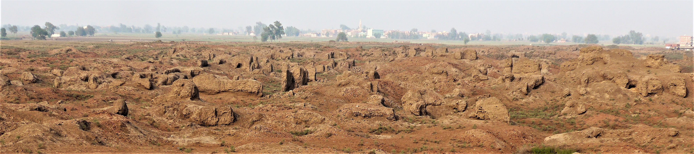

The ruins of the Greco-Roman Egyptian city of Thmuis are found at Tell-El Timai in the Nile Delta of Egypt near the modern city of El-Mansoura. Thmuis is first mentioned in Classical texts by Herodotus (Histories of Herodotus 2.166) based on his visit in the middle of the 5th century BCE. By Ptolemaic times the city was flourishing, having assumed administration of the Mendesian nome from its sister city at nearby Mendes. Historical references to the city in Josephus (Jewish Wars 4.659), Pliny (Natural History 13.2.4), Ammianus Marcellinus (Roman History 22.16) and other sources attest to the importance of the city in the Classical world. The city earned its greatest fame as the source of Mendesian perfume which was prized throughout the Mediterranean, and Thmuis played an important role in the rise of early Christianity, serving as an episcopal see during the Late Roman Period (3rd - 4th centuries CE). The city appears to have been abandoned during the Arab Period in 831 CE following the suppression of a tax revolt.
